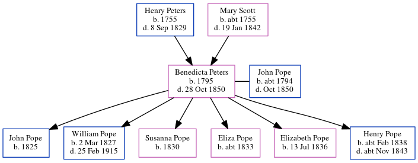

Benedicta Pope (née Peters) 1795 - 1850
[ Home ] | [ Calendar ] | [ Surnames Index ] | [ Census Index ] | [ Family History ]The child of Henry Peters and Mary Scott, Benedicta Peters, the four times great-aunt of Nigel Horne, was born in Folkestone, Kent, England in 17951,2,3,4, was baptized there at Parish Church of St Mary & St Eanswythe, Church Street on Oct 11, 1795 and also married John Pope (a builder with whom she had 6 children: John, William, Susanna, Eliza, Elizabeth and Henry) there at Parish Church of St Mary & St Eanswythe, Church Street on Jul 19, 18146 (St Mary and St Eanswyth Church). On Jun 6, 1841, she was living at Fancy Street in Folkestone10.
She died on Oct 28, 1850 on Mill Lane in Folkestone3,5 (ulceration of the bowels) and was buried at Parish Church of St Mary & St Eanswythe, Church Street, Folkestone on Nov 2, 18503,7,8,9.
Parents
- Henry was born in 1755
- Mary was born c. 1755
Children
- John was born in 1825
- William was born on Mar 2, 1827
- Susanna was born in 1830
- Eliza was born c. 1833
- Elizabeth was born on Jul 13, 1836
- Henry was born c. Feb 1838
Citations
- 1841 England Census Online publication - Provo, UT, USA: The Generations Network, Inc., 2006.Original data - Census Returns of England and Wales, 1841. Kew, Surrey, England: The National Archives of the UK (TNA): Public Record Office (PRO), 1841. Data imaged from the National
- England Deaths & Burials 1538-1991 - Findmypast
- England, Select Deaths and Burials, 1538-1991 Ancestry.com Operations, Inc.
- Kent, Canterbury Archdeaconry burials 1538-1988 - Findmypast
- England & Wales, FreeBMD Death Index: 1837-1915 Online publication - Provo, UT, USA: The Generations Network, Inc., 2006.Original data - General Register Office. England and Wales Civil Registration Indexes. London, England: General Register Office. © Crown copyright. Published by permission of the Cont
- England Marriages 1538-1973 - Findmypast
- Kent, Canterbury Archdeaconry burials 1538-1988 - Findmypast
- England Deaths & Burials 1538-1991 - Findmypast
- England Deaths & Burials 1538-1991 - Findmypast
- 1841 England, Wales & Scotland Census - Findmypast (was age 45 and the wife of the head of the household)
Media
Death Certificate

Canterbury Burials Image - GBPRS-CANT-005264855-00342
Canterbury Baptisms Transcription - GBPRS-CANT-B-96141743
Kent, Canterbury Archdeaconry marriages 1538-1928 - GBPRS/CANT/M/97135321/2
Kent, Canterbury Archdeaconry burials 1538-1988 - GBPRS/CANT/D/95109715
England & Wales deaths 1837-2007 - BMD/D/1850/4/AZ/000569/134
1841 England, Wales & Scotland Census - GBC/1841/0014081082
England Births & Baptisms 1538-1975 - R_885252714
England Deaths & Burials 1538-1991 - R_277037963
England Deaths & Burials 1538-1991 - R_276350656
Family Tree
Generated by ged2site. Last updated on Jun 11, 2024